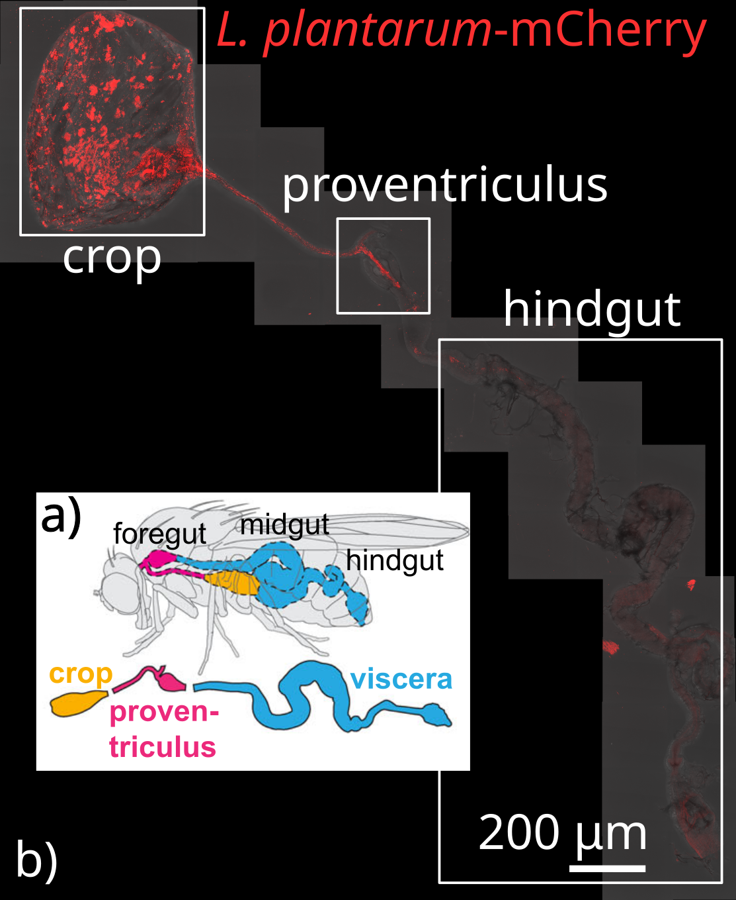
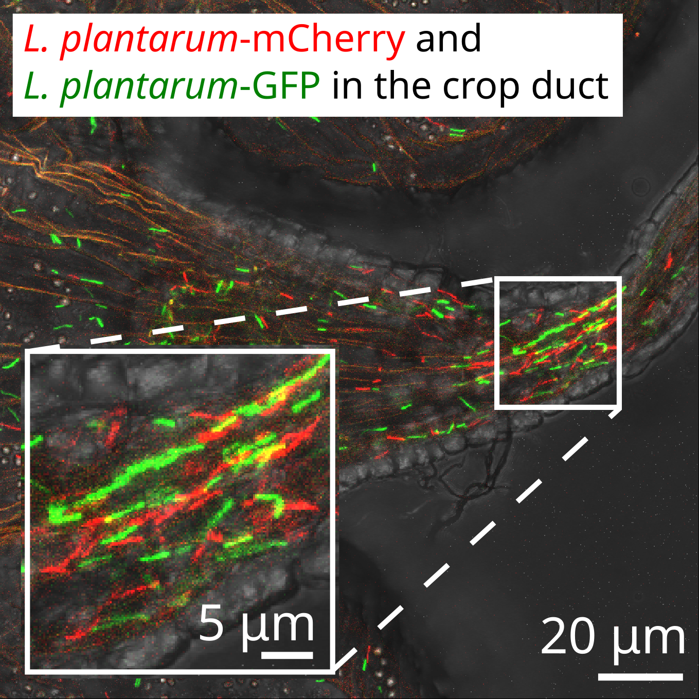

Ongoing Experimental Research
The Jones Lab studies the fruit fly microbiome with high-throughput, gnotobiotic, and spatially resolved experiments:
- High-throughput, by measuring the bacterial abundances of 96 flies in a single experiment
- Gnotobiotic, by maintaining a germ-free fly line that can be precisely inoculated with doses of known bacteria
- Spatially resolved, by feeding flies fluorescently tagged bacteria that can be visualized with confocal fluorescent microscopy
|
 |
 |
Microbiome Variability
Microbiome assembly and dynamics are inherently stochastic processes. Accordingly, experiments should be performed with high replication to measure distributions of outcomes, and observations should be communicated with the distribution-explicit language of statistical physics.
- How to quantify immigration from community abundance data using the Neutral Community Model (Rafay, Jones, et al., in revision, 2025): We derive two new methods to infer immigration rates based on an ecosystem composition under the Neutral Community Model.
- First-passage-time statistics of growing microbial populations carry an imprint of initial conditions (Jones et al., Scientific Reports 2023): We established a dose-dependent statistical lower bound for the variance in population growth that was validated by in vitro experiments.
- Stochastic microbiome assembly depends on context (Jones et al., PNAS 2022): We developed theory to predict the probability that certain sets of microbial species colonize the fruit fly gut. The developed stochastic theory provides design principles for the construction of fecal transplants.
Microbiome Spatial Structure
Microbiomes are not well-mixed environments. Their spatial structure impacts microenvironment, interspecies interactions, metabolic capacity, and subsequent microbial colonization.
- A symbiotic physical niche in Drosophila melanogaster regulates stable association of a multi-species gut microbiota (Dodge, Jones, et al., Nature Communications 2023): Collaborators at the Ludington Lab used fluorescent confocal microscopy to show that microbes preferentially colonize specific spatial niches in the fruit fly gut. We developed ecological metapopulation theory to predict the average population size of each localized colony.
Microbiome Feedbacks
Attempts to manipulate microbiomes must withstand host, microbial, and evolutionary responses.
- Microbiome interactions shape host fitness (Gould, Zhang, Lamberti, Jones, et al., PNAS 2018): Gnotobiotic experiments show that fruit fly traits (life span, fecundity, development time) depend on microbiome composition. We found that the traits of flies with multi-species microbiomes can largely be predicted from the traits of flies with single-species microbiomes.
- In silico analysis of antibiotic-induced Clostridium difficile infection: Remediation techniques and biological adaptations (Jones and Carlson, PLOS Computational Biology 2018): We simulated fecal transplants in a mathematical model of C. difficile infection parameterized by mouse experiments, identify how transplant efficacy depends on host microbiome composition and dose timing.
Ecological Coarse-Graining and Immune Feedbacks
- Steady-state reduction of generalized Lotka-Volterra systems in the microbiome (Jones and Carlson, Physical Review E 2019): The coarse-graining technique Steady-State Reduction (SSR) approximates high-dimensional ecosystems as an analytically tractable two-dimensional system. Two follow-up projects with undergraduate mentees utilizing SSR were published in Physical Review E and Advances in Nonlinear Biological Systems.
- Aging-induced fragility of the immune system (Jones et al., Journal of Theoretical Biology 2021): We demonstrate how feedbacks between the adaptive and innate branches of the immune response can lead to chronic inflammation.
External Collaborations
The Jones Lab is fortunate to work with awesome experimental collaborators to study:
- fruit fly microbiome assembly, spatial structure, and phenotypes with Will Ludington (Johns Hopkins University),
- duckweed microbiome composition and their spatial metatranscriptomics with Megan Frederickson (University of Toronto), and
- activated sludge bioreactors (in the context of the Neutral Community Model) with Jane Fowler (Simon Fraser University).